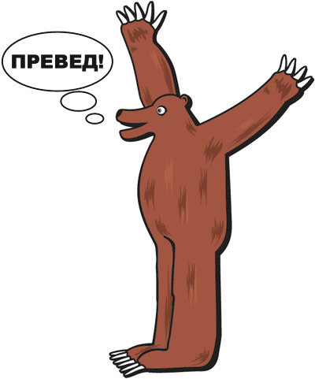
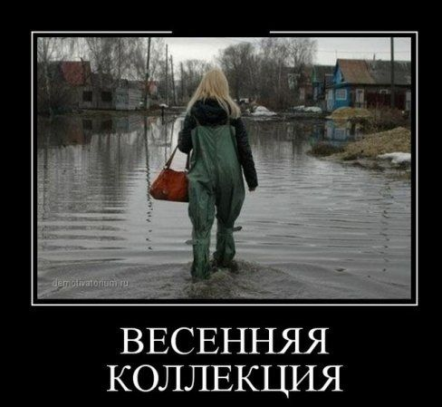

Эпоха Web 2.0: Форумы, Блоги и Глянец
2000-е годы перевернули интернет. Скорость выросла, появились первые социальные сети (ВКонтакте, Facebook), расцвели блоги (LiveJournal) и форумы. Дизайн стал объемным, с тенями и бликами — это стиль Web 2.0. А мемы перестали быть уделом гиков и пошли в массы.
Золотая эра Демотиваторов
Изначально демотиваторы появились как пародия на скучные мотивационные плакаты в офисах. Классический формат: черная рамка, картинка в белой окантовке и надпись жирным шрифтом Impact.
В рунете демотиваторы стали настолько популярны, что сайты для их создания (например, demotiwators.ru) собирали миллионы просмотров, породив целую культуру черного юмора и сарказма.

ДЕДЛАЙН
Он ближе, чем ты думаешь

Превед, Медвед! и Олбанский язык
В середине 2000-х в рунете зародился «язык падонков» (он же Олбанский). Люди намеренно коверкали слова: «Аффтар жжот», «КГ/АМ», «Пеши исчо». Это был своеобразный протест против правил русского языка и способ распознать «своих» на форумах.
Символом этой эпохи стала картина Джона Лури «Bear Surprise», которая в рунете превратилась в легендарного Медведя с криком «ПРЕВЕД!».